Server-side Config
Invoke /tbm-server-edit to print out server settings to the "chat" area.
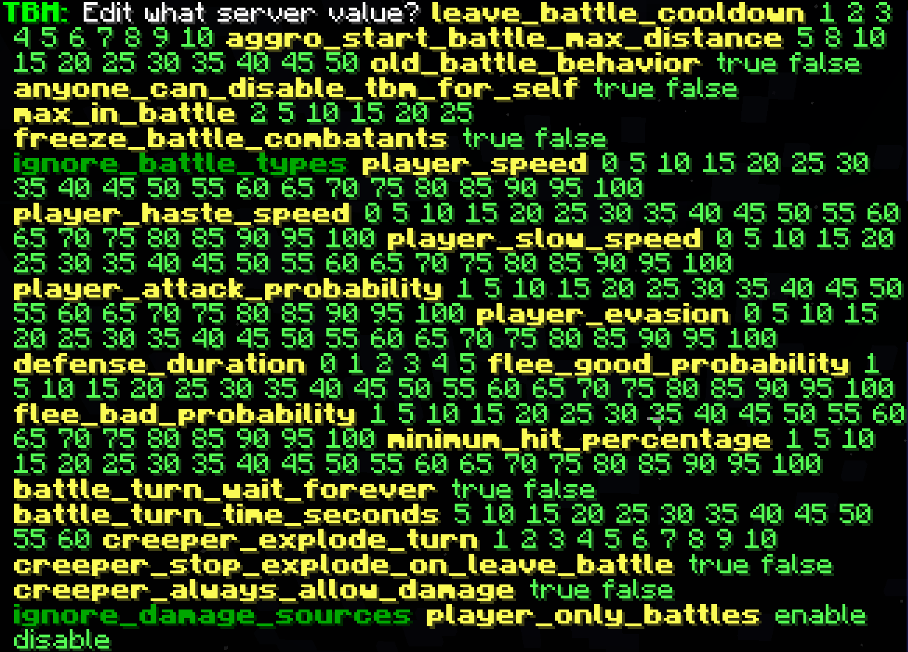
In this text area, yellow texts are setting names, green texts are setting values that can be set when clicked on, and dark-green texts are settings that display more settings when clicked on.
Note
You can hover/click these texts by pressing the "t" key to open the chatbox, and using the mouse.
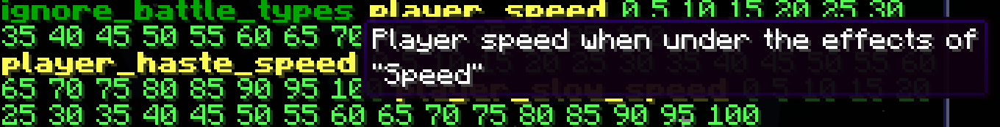
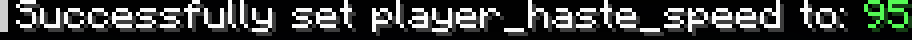
When clicking on the dark-green texts, a description and list is shown. You can hover over the text to show what actions may occur when clicked.
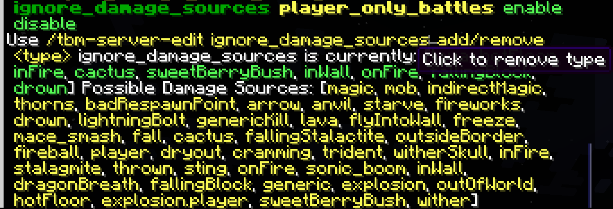
On click, the action taken will be shown.
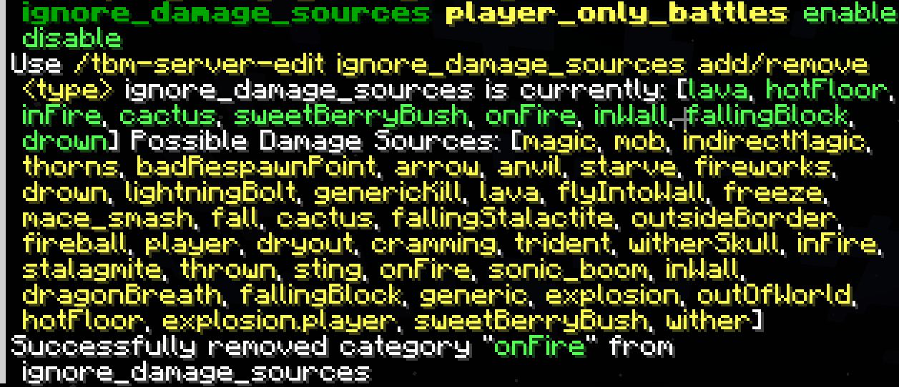
It is also possible to set config settings via a command, but it is recommended to use the "click-on-chat" interface for general server config settings.
Per-Mob Settings
To demonstrate setting "per-mob" settings, it will be shown how to do so with sheep.
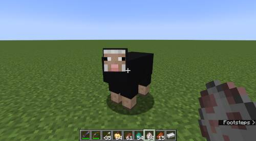
Invoke /tbm-edit. Some helpful text will show.
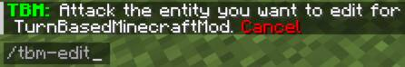
At this point, TBMM (TurnBasedMinecraftMod) will be keeping track of who you will attack next, so that you can edit their settings. Currently this only applies to mobs like sheep, zombies, skeletons, bees, etc. This is done so that you can physically select the mob you want to "edit".
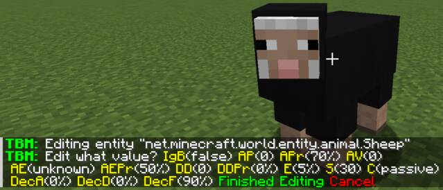
In this example, the "AE" (attack effect) setting will be changed to "levitation", which will cause the sheep to make the player levitate 50% of the time.
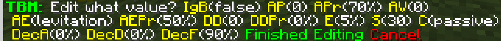
Also, "DecisionAttack" will be set to 100%, so that the sheep will choose to attack instead of fleeing battle.
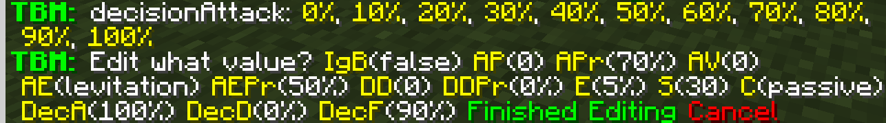
Note
Make sure to click on "Finished Editing" to save changes to the server-side config.
Note that for sheep to enter battle, they must be removed from the "ignore battle categories" setting (remove the "passive" category).
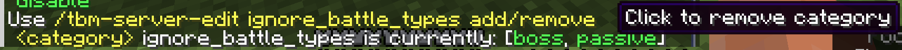
Now, sheep will attack and cause "levitation" 50% of the time.
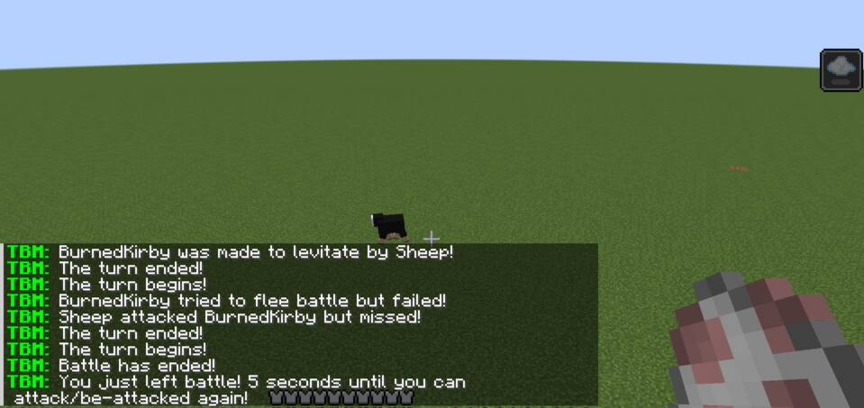
Custom Name Settings
Additional entries can be added to the server-side config that applies to mobs
named with a specific name (like with a name-tag). Name a mob, then invoke
/tbm-edit custom.
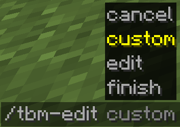
Hit the named mob to start the editing process.
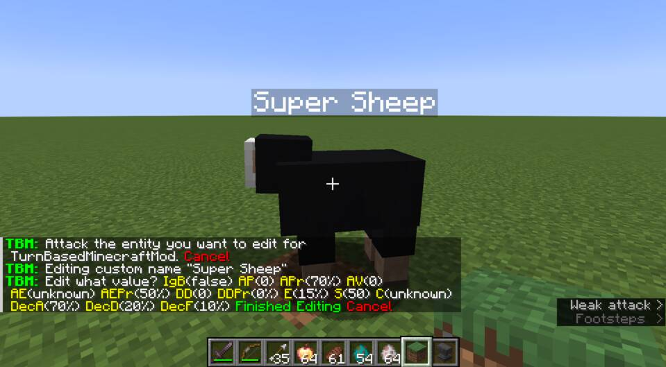
Make your changes and click on "Finished Editing", and any mob with that exact name will have these battle settings applied.
Note
These settings are also in the server-side config.
Other Things to Know
Sometimes a mod update will "reset" the settings in the server-config to
defaults. This is due to new mob entries in the settings. Check the
.minecraft/config folder (or config folder on the server) to see that the
old settings file was renamed and the new settings file is in its place. You may
have to compare the files to keep the settings you want.